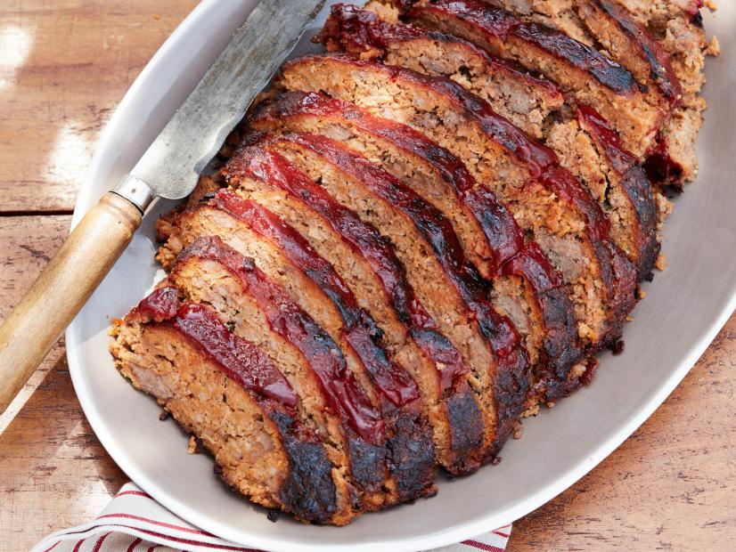

Smoked Recipes

Smoked Meatloaf
Nice slow smoky meatloaf. blinded with barbecue-flavored corn chips for extra smokiness.
- 2/3 cup ketchup
- 1/4 cup tomato paste
- 1 teaspoon apple cider vinegar
- 1 teaspoon worcestershire sauce
- 1/2 teaspoon chipotle power
- 6 ounces barbecue-flavored corn chips (about 3 cups)
- 3 large eggs, lightly beated
- 2 garlic cloves, finely grated
- 1 small onion, finely grated
- 1 pound ground beef
- 1 pound ground pork
- 1 pound ground turkey
- Kosher salt and freashly ground black pepper
- Soak the wood chips in water for at least an hour and then drain.
- Whisk together the ketchup, tomato paste, vinegar, Worcestershire and chipotle powder in a large bowl.
Remove about a third of this mixture and set aside for the glaze.
- Pulse the corn chips in a food processor until finely ground, then transfer to a large bowl.
Add the ketchup mixture along with the eggs. Stir to combine and let sit for long enough for the corn chips to soften,
about 10 minutes. Add the garlic, onion, beef, pork, turkey,
1 tablespoon salt and a few grinds of pepper.
Use your hands to mix together until nicely incorporated.
- Lay out a long piece of foil and shape the meat mixture into a loaf about 10-inches long and 2-inches thick.
Top with another piece of foil and crimp and fold the edges shut.
Poke several holes on both sides of the foil packet.
- Prepare your smoker with the drained wood chips for 275 degrees F according to the manufacturer's instructions.
Set up a drip pan. Smoke until the meatloaf is about 130 degrees F,
about 1 hour and 30 to 45 minutes. Cut open the foil and pull it back, then brush the reserved glaze all over the top.
Continue to cook until it reaches an internal temperature of 165 degrees F, about 1 hour and 25 to 30 minutes more.
- Let the meatloaf rest for about 10 minutes, then slice and
enjoy!